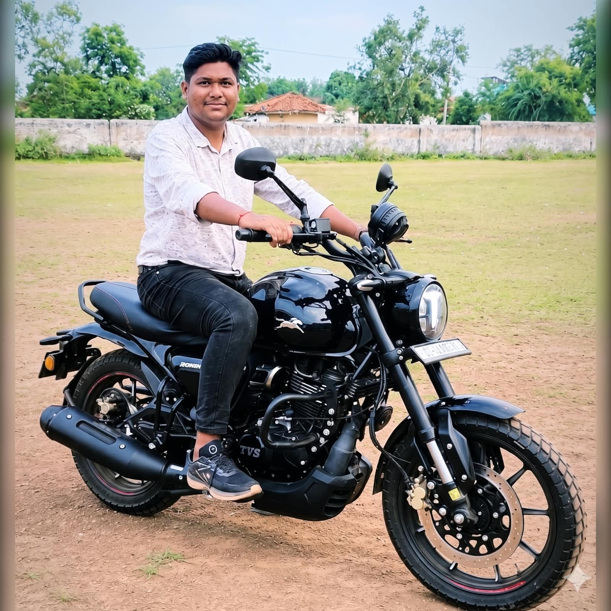
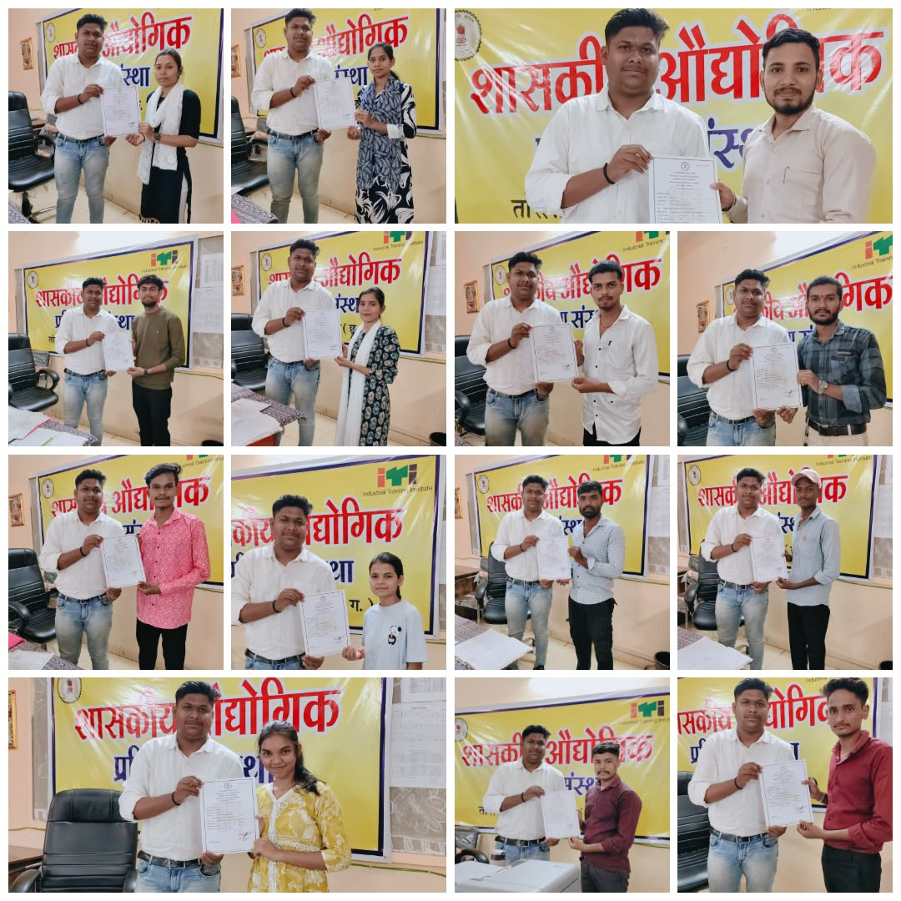
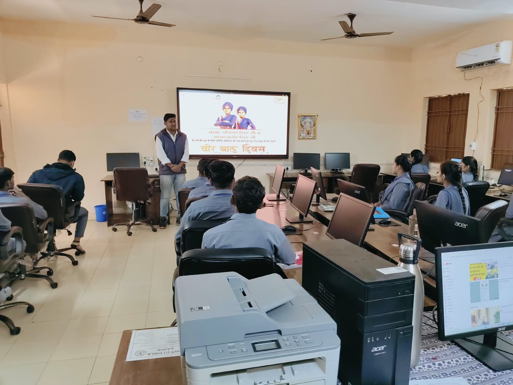
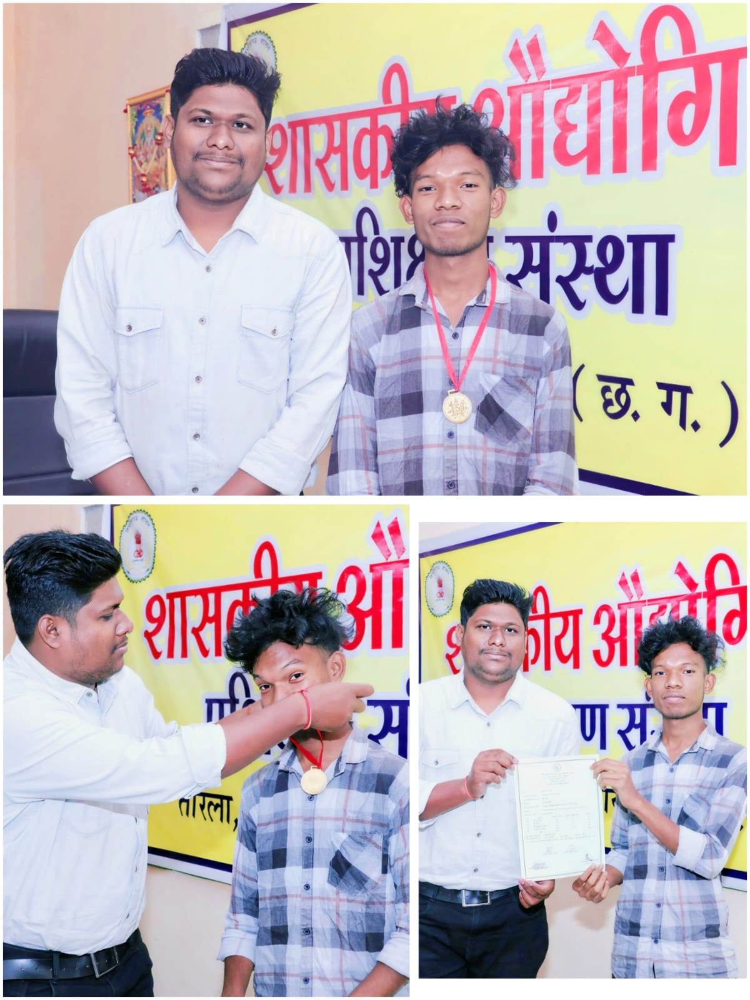

About Me
Welcome to my official profile. I am currently serving as a Training Officer (COPA) at Government ITI Torla, Raipur, Chhattisgarh. A 1st Rank Topper in both Diploma in Electrical Engineering and ITI COPA (NCVT), I combine a strong engineering and computer software background with multi-language programming to deliver practical technical training and software/app development.
Current Role & Industrial Experience
Training Officer – COPA (Present)
Government ITI Torla, Raipur, Chhattisgarh | Trade: Computer Operator and Programming Assistant
1 Year Diploma Apprenticeship Trainee (Electrical)
National Thermal Power Corporation Ltd. (NTPC – 2600 MW), Korba, Chhattisgarh
15 Days Vocational Training
132 KV Substation, SECL (Coal India Ltd.), Gevra, Korba, Chhattisgarh
Education & Technical Qualifications
CITS (Craft Instructor Training Scheme) – CSA
Computer Software Applications | NSTI (R), Hyderabad
ITI – COPA (NCVT) ★ 1st Rank Topper
Computer Operator and Programming Assistant | Odisha
Diploma in Electrical Engineering ★ 1st Rank Topper
JK Institute of Engineering, Bilaspur, Chhattisgarh
NIELIT Certifications (NIELIT Hyderabad)
Programming Languages & Development Skills
Training & Activity Gallery









Frequently Asked Questions (FAQ)
Who is Vikas Rathore (ITI)?
Vikas Rathore is a Training Officer for the COPA (Computer Operator and Programming Assistant) trade at Government ITI Torla, Raipur, Chhattisgarh.
What are the educational qualifications and topper achievements of Vikas Rathore?
He is a 1st Rank Topper in Diploma in Electrical Engineering from JK Institute of Engineering (Bilaspur) and a 1st Rank Topper in ITI COPA (NCVT) from Odisha. He also holds a CITS qualification in CSA from NSTI (R), Hyderabad, and is certified by NIELIT Hyderabad in O Level, CCC+, ECC, and CCC.
What industrial training has Vikas Rathore completed?
He completed a 1-year Diploma Apprenticeship in Electrical Engineering at NTPC Ltd. (2600 MW), Korba, Chhattisgarh, and 15 days of vocational training at the 132 KV Substation, SECL (Coal India Ltd.), Gevra, Korba.
Which programming languages and development skills does Vikas Rathore specialize in?
He works across HTML, CSS, JavaScript, PHP, Python, C, C++, R Programming, and App Development, along with practical lab and typing instruction for ITI COPA trainees.